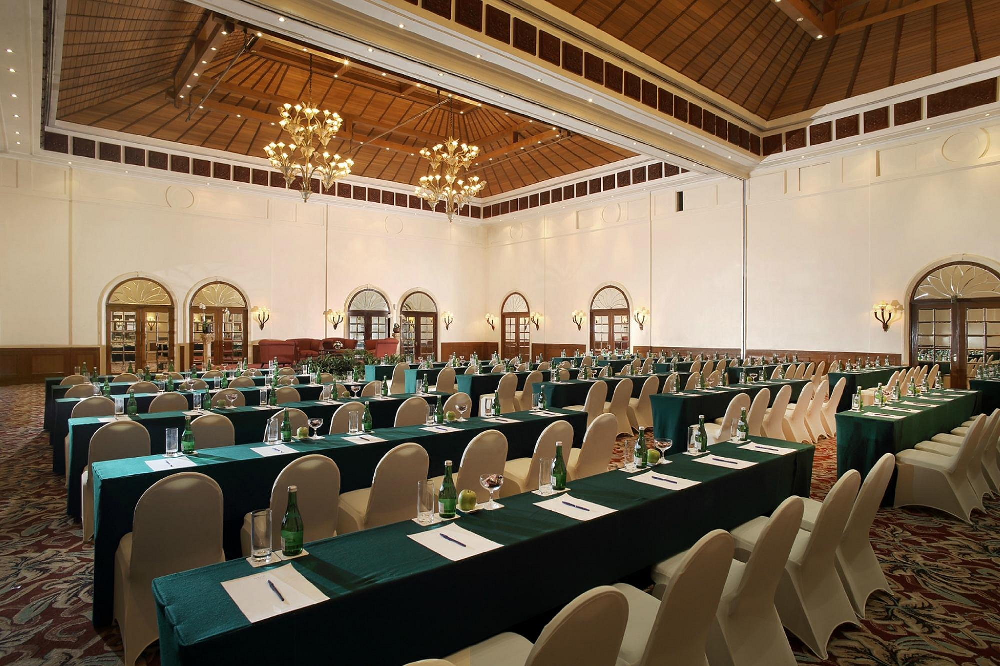
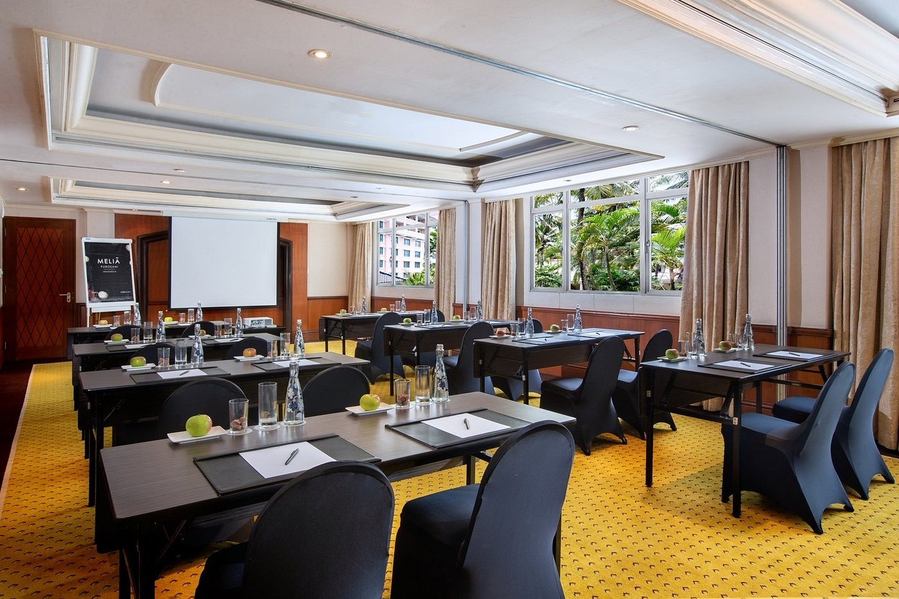
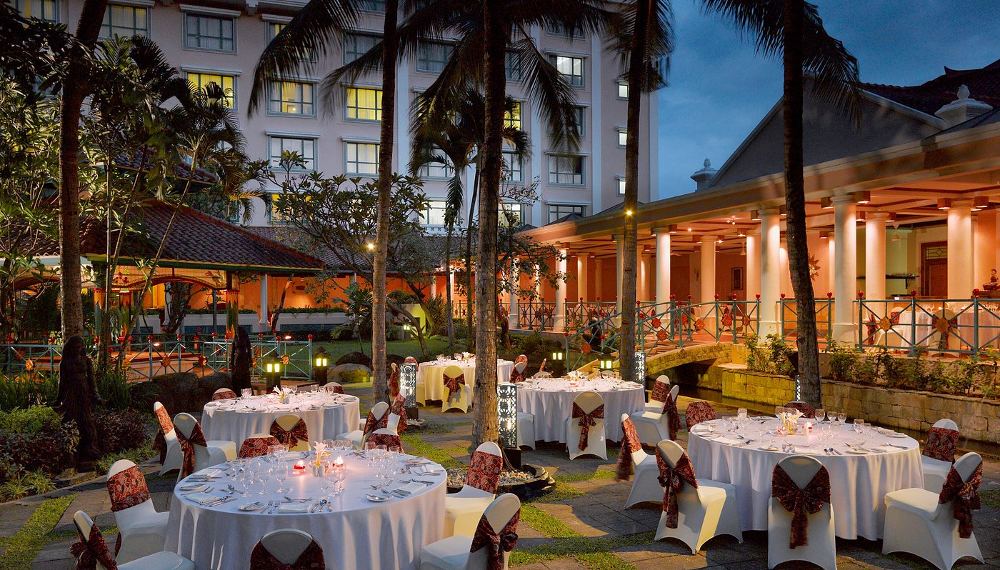

MEETING ROOM & EVENT
Ruang Sempurna untuk Acara Bisnis dan Spesial Anda
Hotel MELIA PUROSANI menyediakan fasilitas ruang pertemuan dan ballroom elegan yang ideal untuk berbagai acara, mulai dari rapat bisnis, konferensi, hingga pernikahan.

Amarta Ballroom
Ballroom mewah berkapasitas hingga 800 tamu, cocok untuk resepsi pernikahan, gala dinner, dan konferensi besar. Dilengkapi dengan sistem audio-visual modern dan layanan profesional.

Meeting Rooms
Beragam pilihan ruang meeting untuk kebutuhan bisnis Anda. Dilengkapi meja rapat, proyektor, papan tulis, serta koneksi Wi-Fi cepat untuk mendukung produktivitas.

Outdoor Event Space
Area terbuka di taman tropis kami sangat ideal untuk pesta kebun, peluncuran produk, atau acara santai lainnya dengan latar belakang alami yang indah.